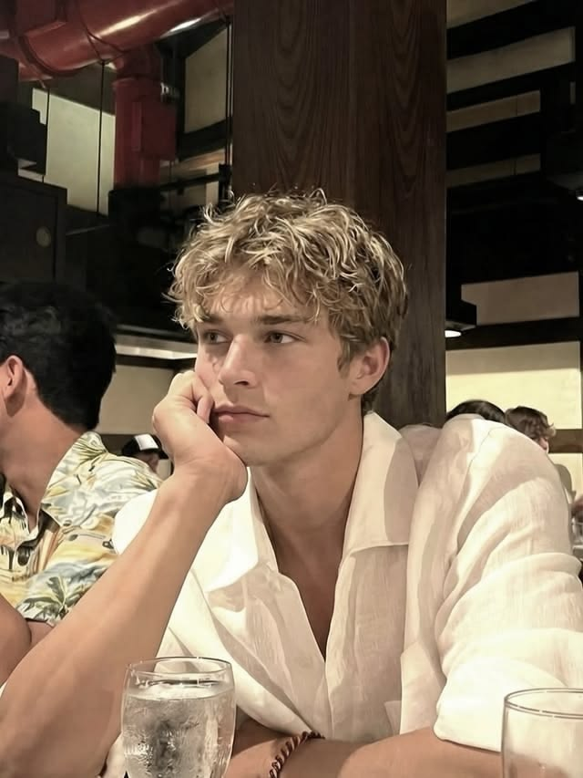

Герои
Два профиля — как пилотские карточки F1.
Кармен Диас Маркес
Стратег команды Scuderia Ferrari HP
| Возраст | 32 года |
| Дата рождения | 13 апреля |
| Родилась | Испания, Аликанте |
| Рост | 159 см |
| Должность | Стратег Ferrari |
История
Выросла в Аликанте в семье инженера-кораблестроителя и учительницы математики. Отец учил её считать по-другому: не «сколько получится», а «сколько нужно запаса, если всё пойдёт не так». Эта привычка осталась навсегда.
Окончила прикладную математику, потом магистратуру по моторспорту. Начинала в стратегическом отделе небольшой команды, где одна аналитика отвечала за всё: шины, погоду, пит-стопы, поведение соперников. В Ferrari попала в 2021 году и за несколько сезонов выросла до человека, который ведёт гонку с командного мостика.
Рана
Этап 2024 года, решение по пит-стопу, которое стоило команде подиума. Тогда она была права по цифрам и неправа по ситуации на трассе. Болельщики травили её в сети, в паддоке шутили за спиной. С тех пор у неё всегда есть запасной план, и она не терпит, когда ему не следуют.
Сильные стороны
- Считает быстрее всех в паддоке
- Держит спокойствие под давлением
Слабые стороны
- Контроль
- Недоверие к чужим «ощущениям»
- Резкость

Ханс Мюллер
Первый механик команды Scuderia Ferrari HP
| Возраст | 28 лет |
| Дата рождения | 17 февраля |
| Родился | Германия, Кёльн |
| Рост | 183 см |
| Должность | Первый механик Ferrari |
История
Вырос в Кёльне в семье автослесаря, с шести лет сидел в отцовской мастерской. Выучился на автомеханика, потом прошёл путь через DTM и GT, откуда его забрала команда Формулы 2, а затем топ-команда Формулы 1.
Там он несколько сезонов работал на машине, а на втором его сезоне случилось то, о чём он не говорит вслух: на пит-стопе, который стратегический отдел сократил до предела ради красивой цифры, получил травму его друг, механик. Решение приняли в кабинете, платил за него человек в гараже. Через сезон Ханс ушёл. В 2026 году перешёл в Ferrari, потому что команде нужен был механик, который не боится спорить.
Рана
Йонас. Три операции. Сейчас ходит с тростью. Ханс до сих пор не простил тех, кто принял «красивое» решение.
Сильные стороны
- Чувствует баланс болида на слух и на ощупь
- Умеет вести людей, не ломая их
Слабые стороны
- Упрямство
- Вера в «руки» больше, чем в данные
- Уверен, что стратеги не знают цену своим решениям